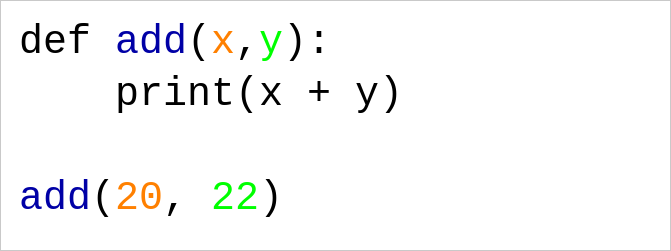
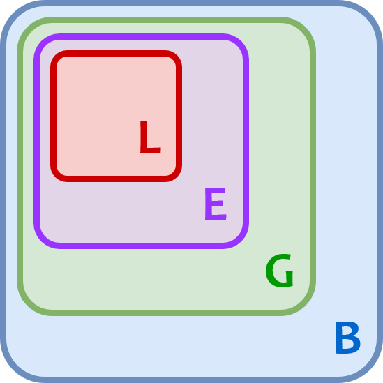

Keyboard shortcuts:
N/СпейсNext Slide
PPrevious Slide
OSlides Overview
ctrl+left clickZoom Element
If you want print version => add '
?print-pdf' at the end of slides URL (remove '#' fragment) and then print.
Like: https://wwwcourses.github.io/...CourseIntro.html?print-pdf
Functions in Python
Created for
Iva E. Popova, 2016-2024,

What are Functions?
What are Functions?
- A function is a named block of statements (i.e. a sequence of instructions) which perform one conceptual task.
- A typical example for a function in the real life, is a recipe in a cooking book.
- The statements in the function are performed only after the function is called.
- Functions help us to organize our code (break a task into sub-tasks)
### functions definitions
def sub_task_1():
pass
def sub_task_2():
pass
...
def sub_task_n():
pass
### main program
sub_task_1()
sub_task_2()
...
sub_task_n()
Function Definition
Function Definition
def function_name(param_list):
'''docstring'''
statements
return expression
- def: a keyword that starts the function definition
- function_name: should be valid identifier (variable name).
- param_list: optional. A list of function parameters. The braces around it are required, even if the list is empty.
- '''docstring''': optional. A string for function documentation.
- statements: block of statements, also called function body. Must have at least 1 statement.
- return expression: optional. Specify what the return value of the function should be.
- Example: simplest definition
- Example: full definition
def calculate_sum():
pass
def calculate_sum(number1, number2):
'''
Takes two numbers as parameters and returns their sum.
Parameters:
number1 (int/float): The first number.
number2 (int/float): The second number.
Returns:
int/float: The sum of number1 and number2.
'''
total_sum = number1 + number2
return total_sum
The pass statement
- Sometimes you need to define a function which body will be written later, but Python did not allows empty blocks!
- In such cases, you can use the
passstatement for function body: - You can use the
passstatement anywhere in your code (if, for, while, etx. blocks), where you need a "do nothing" block!
def do_task1():
pass
def do_task2():
pass
def do_task3():
pass
simplest example
def greet():
"""Just prints hello"""
print("Hello!")
- Note, this code will not print anything if you try to run it as is
- This is just the function's definition
- In order to execute the statements in it, the function should be called!
Function Call
Synonyms: Function Execution; Function Invocation
Function Call
- The statements in the body of a function will be executed only when the function is called:
- opt_arg_list is optional, but braces are required
- Note, that the braces after the function name are present!
function_name(opt_arg_list)
### define greet() function
def greet():
"""Just prints hello"""
print("Hello!")
### execute the greet() function:
greet()
- A function must be defined before you call it, or a NameError will be raised!
- function call - the right way:
# execute the greet() function:
greet()
# define greet() function:
def greet():
print("Hello!")
# NameError: name 'greet' is not defined
# define greet() function:
def greet():
print("Hello!")
# execute the greet() function:
greet()
# Hello!
Function Parameters
Function Parameters
- A function is not very useful if it operates on same values
- It will be better if we could do:
- And that's why in a function we can define parametrs.
def add():
print(2+3)
add()
add()
add()
# 5
# 5
# 5
# call add with different arguments:
add(20, 22)
add(123, 321)
add(16, 10)
# DESIRED OUTPUT:
# 42
# 444
# 26
- Parameters are local function variables which get values when the function is called with the respective arguments. 
- You can define a function to use parameters by listing them in the braces.
- Parameters names should be valid variable names.
- When you call a function, you pass the respective values (called arguments)
{kind=link}
Positional Parameters/Arguments
- Passing arguments values to parameters can be done by position. In this case, we speak about positional parameters/arguments:
- first parameter gets the value of first argument
- second parameter - the value of second argument
- and so on...
- The number of arguments passed must be equal to the number of parameters, or a TypeError is raised

def sub(x,y):
""" subtracts y from x and prints the result """
print(x - y)
sub(99)
# TypeError: sub() missing 1 required positional argument: 'y'
sub(99, 3, 3)
# TypeError: sub() takes 2 positional arguments but 3 were given
Default Parameters Values
- A default value to the "trailing" parameters can be defined, and that value will be used if no argument for that parameter is passed.
def greet(name="Nobody"):
""" greets a user """
print("Hello", name)
greet("Maria")
greet()
# Hello Maria
# Hello Nobody
Default Parameters Values
- Default parameters must follow the non-default parameters, or SyntaxError is raised.
- Here is the correct definition:
def greet(msg="Hi", name):
print(f"{msg} {name}!")
greet("Maria")
# SyntaxError: non-default argument follows default argument
def greet(name, msg="Hi"):
print(f"{msg} {name}!")
greet("Maria")
# Hi Maria!
Keyword (named) Arguments
- If you explicitly state the parameter name in the argument list, that parameter will get its value, no matter of where it is positioned.
- Keyword arguments must follows the positional arguments!
- This is the correct syntax:
- Or this (all arguments are keyword):
def greet(msg, name):
print(f"{msg} {name}!")
greet(name="Maria", msg="Hi")
def greet(msg, name):
print(f"{msg} {name}!")
greet(name="Maria", "Hi")
# SyntaxError: positional argument follows keyword argument
def greet(msg, name):
print(f"{msg} {name}!")
greet(name="Maria", "Hi")
def greet(msg, name):
print(f"{msg} {name}!")
greet(name="Maria", msg="Hi")
Variable Number of Positional Arguments (*args)
- You can define a function to take variable number of arguments with * (star) operator in front a parameter name. Commonly written as
*args *argsis a special syntax that collects extra positional arguments into a tuple.- The name
argscan be any valid variable name, but its a convention to use*argsto denote that it contains the packed arguments.
def foo(*args):
print(args)
foo(1)
foo(1,2)
foo(1,2,3)
#(1,)
#(1, 2)
#(1, 2, 3)
Variable Number of Positional Arguments (*args)
*argsmust follow the positional parameters in definition (if any), or TypeError is raised:- This is the correct way:
def greet(*args, first_name):
print(f"Hello, {first_name}!")
for other_name in args:
print(f"Hello, {other_name}!")
# Example usage
greet("Alice", "Bob", "Charlie", "Diana")
# TypeError: greet() missing 1 required keyword-only argument: 'first_name'
def greet(first_name, *args, ):
print(f"Hello, {first_name}!")
for other_name in args:
print(f"Hello, {other_name}!")
# Example usage
greet("Alice", "Bob", "Charlie", "Diana")
# Hello, Alice!
# Hello, Bob!
# Hello, Charlie!
# Hello, Diana!
Variable Number of Positional Arguments (*args) - Task
- Define the
calculate_sum()function, which will print the sum of variable number of numerical arguments
# calculate_sum() definition
# test your code:
calculate_sum(1)
#should print 1
calculate_sum(1,2)
#should print 3
calculate_sum(1,2,3)
#should print 6
Variable Number of Keyword Arguments (**kwargs)
- You can use
**(double stars) in front of parameter name which will collects a variable number of keyword arguments into a dictionary.
def foo(**kwargs):
print(kwargs)
foo(a=1, b=2)
# {'a': 1, 'b': 2}
def foo(**kwargs):
print(kwargs)
foo(a=1, b=2)
# {'a': 1, 'b': 2}
Variable Number of Keyword Arguments (**kwargs) - example
- Example 1:
- Example 2:
def print_user_data(**kwargs):
print(f'Data for user {kwargs['name']}: ')
for k,v in kwargs.items():
print(f'{k} - {v}')
print_user_data(name='Ada', age=28)
print_user_data(name='Maria', age=30, town='London')
# Data for user Ada:
# name - Ada
# age - 28
# Data for user Maria:
# name - Maria
# age - 30
# town - London
def configure_system(**kwargs):
print("System Configuration:")
for setting, value in kwargs.items():
print(f" - {setting}: {value}")
# Example usage
configure_system(resolution="1920x1080", brightness=75, volume=40)
# System Configuration:
# - resolution: 1920x1080
# - brightness: 75
# - volume: 40
Unpacking sequence into positional parameters
- You can unpack a list/tuple passed as argument into listed positional parameters with the
*operator
def my_func(p1,p2,p3):
print(p1, p2, p3)
args = [1,2,3]
my_func(*args)
# 1 2 3
Note, that if you miss the star in my_func(*[1,2,3]), Python will assign the whole list [1,2,3] to p1, and the rest of parameters will receive no value. That will throw an error!
Unpacking dictionary into named arguments
- You can use
**(double stars) to unpack dictionary into named arguments.
def menu_print(fruit, price):
print("{:.<20s}{:.2f}".format(fruit,price))
menu_print(**{
"price": 2.5,
"fruit": "apple"
})
# apple...............2.50
Function Return Values
Function Return Values
return statement
- Functions in Python can return values, using the
returnstatement:
def f():
statements
return [expression]
def add(x,y):
return x+y
print(add(2,4)**2)
# 36
return statement
The return statement exit the function! Any code after return will never be executed:
def add(x,y):
return x+y
# next line will never be executed:
print("After return")
print(add(2,4))
Default return value
- If a function did not have an explicit
returnstatement, then the function return value is None. - In Python each function returns a value, being it None!. And function call is an expression which value is the returned function value.
def foo():
print("foo() was executed!")
def bar():
print("bar() was executed!")
return "End"
print( foo() )
print( bar() )
# OUTPUT:
# foo() was executed!
# None
# bar() was executed!
# End
def add(a, b):
return a + b
def div(a,b):
return a/b
res = add(2,3) + div(4,2)
print(res)
Lambda expressions
Lambda expressions
Overview
- Lambda expressions in Python are a way to create small, anonymous functions (functions without a name)
- These functions are often used for short-duration tasks where defining a full function would be unnecessarily verbose.
- A lambda function can have any number of parameters but can only have one expression in its body.
- parameters are the input parameters to the function. Can be any number, including zero, as in standard function definition.
- The expression is evaluated and returned when the lambda function is called.
- Example:
- which is equivalent to:
lambda parameters: expression
double = lambda x: x * 2
print(double(5)) # 10
def double(x):
return x*2
print(double(5)) # 10
Examples
- Lambda with no parapeters
- Lambda as dictionary value:
greet = lambda: "Hello, World!"
print(greet()) # Hello, World!
calc = {
'add': lambda x, y: x + y,
'sub': lambda x, y: x - y,
'mul': lambda x, y: x * y,
'div': lambda x, y: x / y if y != 0 else 'Error: Division by zero'
}
print( calc['add'](4,2) ) # 6
print( calc['sub'](4,2) ) # 2
print( calc['mul'](4,2) ) # 8
print( calc['div'](4,2) ) # 2.0
Lambdas in sorting
- Lambdas are frequently used in sorting in Python, particularly when you need to sort complex data structures like lists of tuples, dictionaries, or objects.
- The
sorted()function and thelist.sort()method both accept akeyparameter, where you can pass a lambda function to control the sorting criteria. - Example: sorting a list of tuples based on the second value
- Reference: Sorting HOW TO @python.org
data = [(1, 'Z'), (2, 'Y'), (3, 'X')]
sorted_data = sorted(data, key=lambda t: t[1])
print(sorted_data)
# [(3, 'X'), (2, 'Y'), (1, 'Z')]
Lambdas in sorting - examples
- Sorting a list of dictionaries by a specific key:
- Sort data in dictionary as a list of sorted tupples
users = [
{'name': 'Alice', 'age': 30},
{'name': 'Bob', 'age': 25},
{'name': 'Charlie', 'age': 35}
]
sorted_users = sorted(users, key=lambda user: user['age'])
print(sorted_users)
# [{'name': 'Bob', 'age': 25}, {'name': 'Alice', 'age': 30}, {'name': 'Charlie', 'age': 35}]
products = {
'apple': 3,
'coffee': 2.5,
'beer': 4.20
}
sorted_products = sorted(products.items(), key=lambda item:item[1])
print(sorted_products)
# [('coffee', 2.5), ('apple', 3), ('beer', 4.2)]
Scope and Namespaces
Scope and Namespaces
- A namespace stores the mapping from names to objects. Usually implemented internally by a dictionary.
- Namespaces is a s a runtime concept - they are defined during the execution of a program.
- For example, the global namespace is created when a module (Python file) is loaded, and a function's local namespace is created when the function is called, and destroyed when the function returns or completes execution.
- A scope is a lexical (textual) region of the program, where a namespace is directly accessible (i.e. without a prefix).
- Scopes are determined at compile time (statically), which means Python determines the scope of names before the program runs based on the structure of the code
- You can think of the scope as part of your program where a variable can be accessed (used, visible).
{kind=link}
Local Scope
- Names created inside a function, as well as the function's parameters, are local to the function and are visible only inside that function
- A function's local namespace is created when the function is called, and destroyed when the function returns or completes execution
def f1():
y = 2
print(f"y = {y} inside f1")
f1()
# y = 2 inside f1
print(f"y = {y} outside f1")
# NameError: name 'y' is not defined
Global Scope
- A name defined outside any functions is global to the file/module, and can be accessed after its definition from any place in that file/module.
x = 10
def foo():
print("x = {} inside foo()".format(x))
foo()
# x = 10 inside foo()
print("x = {} outside foo()".format(x))
# x = 10 outside foo()
View the Scope
- In Python, you can use the built-in functions
locals()andglobals()to print the local and global namespace, respectively. locals()returns the namespace, containing the variables defined in the local scope.globals()returns the namespace containing the variables defined in the global scope.
x = 10 # A global variable
def foo():
x = 20 # A local variable
print("Local Scope:", locals())
print("Global Scope:", globals())
foo()
# Local Scope: {'x': 20}
# Global Scope: {'__name__': '__main__', '__doc__': None, '__package__': None, '__loader__': <_frozen_importlib_external.SourceFileLoader object at 0x7f7bcb1d05c0>, '__spec__': None, '__annotations__': {}, '__builtins__': <module 'builtins' (built-in)>, '__file__': '/examples/tmp.py', '__cached__': None, 'x': 10, 'foo': <function my_function at 0x7f7bcb40a2a0>}
Names Resolution
- When a name is assigned a value inside function body, that name is created in function local namespace, even if the same name is already defined in global namespace
x = 1
def foo():
x = 99
print(f"x = {x} inside foo")
foo()
# x = 99 inside foo
print(f"x = {x} outside foo")
# x = 1 outside foo
Variables with same name, defined in different scopes are considered as different variables!
Names Resolution - nested functions
def outer():
x=2
def inner():
x = 3
print(f'x = {x} in inner')
inner()
print(f'x = {x} in outer')
x = 1
outer()
print(f'x = {x} in global')
#x = 3 in inner
#x = 2 in outer
#x = 1 in global
the global statement
- We can declare a name with the
globalstatement prefix - The
globalstatement causes the listed names to be interpreted as global names.
def outer():
x=2
def inner():
global x
x = 3 # we change the global x
print(f'x = {x} in inner')
inner()
print(f'x = {x} in outer')
x = 1
outer()
print(f'x = {x} in global')
#x = 3 in inner
#x = 2 in outer
#x = 3 in global
the nonlocal statement
- We can declare a name with the
nonlocalstatement prefix - The nonlocal statement causes the listed names to refer to previously bound variables in the nearest enclosing scope excluding globals.
def outer():
x=2
def inner():
nonlocal x
x = 3 # we change the x in outer
print(f'x = {x} in inner')
inner()
print(f'x = {x} in outer')
x = 1
outer()
print(f'x = {x} in global')
#x = 3 in inner
#x = 2 in outer
#x = 1 in global
Names Resolution - rules
Although scopes are determined statically, they are used dynamically. I.e. a name is resolved searching in:
- The local (innermost) namespace: This is the namespace of the current function or scope. If a name is defined locally, it is resolved here.
- The namespaces of any enclosing functions: These are searched starting with the nearest enclosing namespace. This layer contains non-local but also non-global names.
- The current module’s global namespace: This contains names defined at the top level of the module or declared global in a function.
- The outermost namespace: This is the namespace containing built-in names, providing access to Python’s built-in functions and objects.

{kind=link}
References
References
Suggested Reading:
HW
Common tasks
- The tasks are given in next gist file
- You can copy it and work directly on it. Just put your code under "### Your code here".
Task1: BMI with functions
Task
- Write a program which will calculate a user BMI.
- Split your logic into functions, and organise your program as given bellow:
def get_user_data():
"""retrieves user data from the command line
Returns:
[dictionary] of the form:
{
"name" : "user_name",
"height": "user heigth in meters",
"weight": "user weight in kilograms"
}
"""
pass
def calc_BMI(w,h):
"""calculates the BMI
Arguments:
w {[float]} -- [weight]
h {[float]} -- [height]
Returns:
[float] -- [calculated BMI = w / (h*h)]
"""
pass
def calc_BMI_category(bmi):
"""Calculates the BMI category
Arguments:
bmi {[float]} -- [the bmi number index]
Returns:
[string] -- [bmi category]
"""
pass
def print_results(bmi_category):
"""[Prints the BMI category to the user ]
Arguments:
bmi_category {[string]} -- []
"""
pass
def cm_to_meters(cm):
"""converts centimetres to meters
Arguments:
cm {[int]}
Returns:
[float]
"""
pass
user_data = get_user_data()
bmi = calc_BMI(user_data["weight"],user_data["height"] )
bmi_category = calc_BMI_category(bmi)
print_results(bmi_category)
Task2: Check user input
- Improve the function
get_user_data()defined in Task1, adding a check for valid user data: - User name must be at least 2 characters long
- User's height must be in the range: [50 - 250]
- User's weight must be in the range: [5 - 300]
- If the user enters wrong data, ask for input again.
- Advanced task: define a separate function for each check (validate_name(), validate_height(), validate_weight()) which will return True if the user input is valid, and False - otherwise.
These slides are based on
customised version of
framework